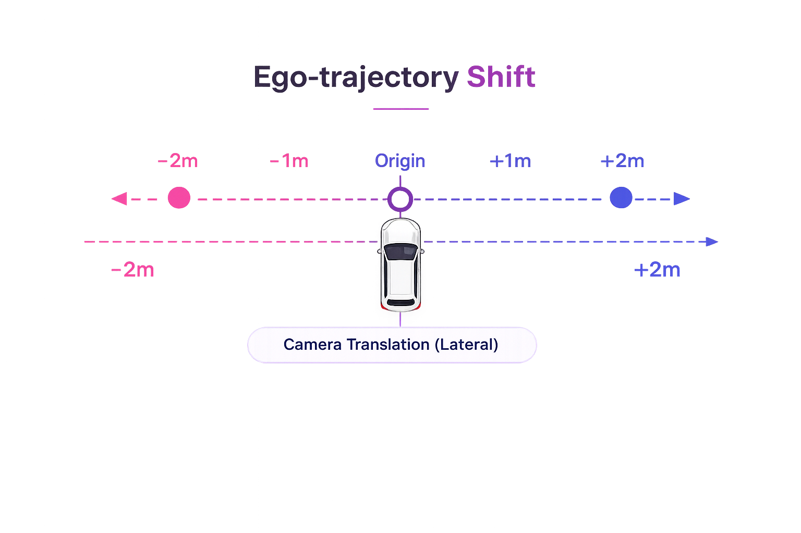
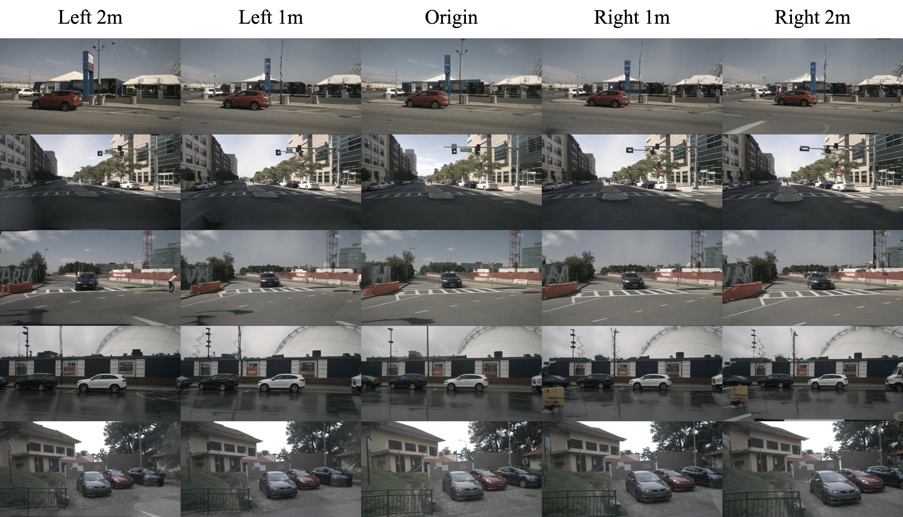
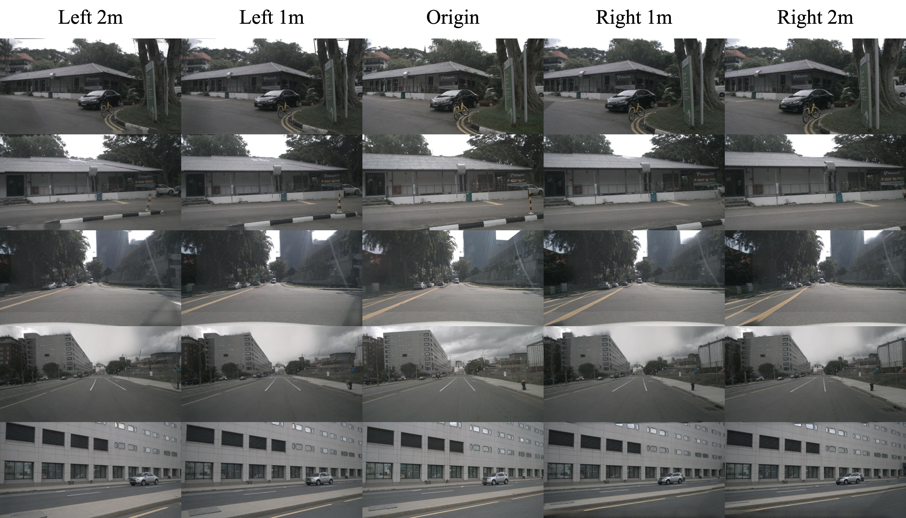
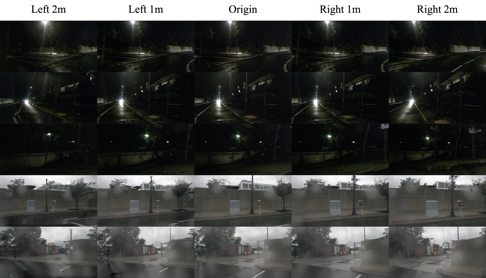

Sparse Traffic
Low-density urban road with limited traffic.
Code will be released upon paper acceptance.
Driving-scene generation can scale autonomous-driving simulation, but RGB videos are hard to re-render from new viewpoints or edit as 3D scenes. We introduce D-World, a framework that converts multi-view temporal video diffusion latents into temporally ordered 3D Gaussian Splatting (3DGS). D-World decodes video latents into pixel-aligned Gaussian primitives, improves sparse-view novel renderings with a geometry-anchored one-step Gaussian Fixer, and distills the fixed views into refined temporal 3DGS. This preserves video-diffusion priors while enabling novel-view rendering and controllable Gaussian-space editing. To reduce diffusion cost, D-World combines head-aligned attention, static conditioning cache, guarded block reuse, batched refinement, and an optimized denoiser, speeding up driving latent generation by 1.70x and Gaussian Fixer inference by 1.40x over a vanilla implementation while preserving high fidelity. On nuScenes, D-World achieves FID 4.63 for original-view generation and 9.34 for novel-view synthesis under a 1m ego-trajectory shift.

Interactive 3DGS Preview
Inspect temporal samples from each generated Gaussian set.
We generate realistic multi-view future driving scenes under a wide range of challenging real-world conditions.
Top row: GT | Bottom row: Ours Gen
Low-density urban road with limited traffic.
Urban driving with nearby vehicles.
Street-lit scenes under low-light conditions.
Wet roads with rainy-weather appearance.
Synthesizing geometrically consistent novel viewpoints under ego-trajectory shifts.




Efficiency Validation
D-World accelerates the two diffusion-heavy stages while preserving close visual agreement with the baseline across all six driving cameras.
201.7s to 118.6s per sample, with 44.20dB PSNR and 0.9993 SSIM against the static-cache output.
8.022s to 5.735s per 7-frame, 6-camera clip, preserving 37.06dB PSNR against the FP16 serial baseline.
Baseline and optimized outputs are paired across six views in a compact grid.